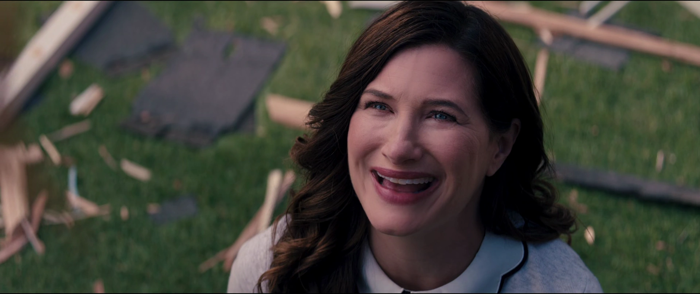

Agatha Harkness
Interpretada por: Kathryn Hahn
Descripción del personaje
Agatha Harkness, interpretada por la talentosa Kathryn Hahn, es un personaje intrigante en la serie WandaVision. Inicialmente presentada como la vecina curiosa y cómica de Wanda, Agnes, se revela que Agatha es una poderosa bruja con sus propias intenciones y conocimientos oscuros. Su presencia en la trama añade capas de misterio y conflicto, desafiando la realidad alterada creada por Wanda.
La única forma de avanzar es volver-Agatha Harkness
Conexión con las sitcoms
La conexión de Agatha con las sitcoms se manifiesta a través de su adaptación a las diferentes épocas televisivas. Desde su participación en situaciones cómicas hasta su papel en el desarrollo de la trama, Agatha utiliza la estética de las sitcoms como parte de su estrategia para ocultar sus verdaderas intenciones. Su personaje se integra hábilmente en la comedia superficial mientras opera en las sombras, proporcionando una capa adicional de complejidad a la narrativa.
Desarrollo del personaje
A lo largo de la serie, Agatha Harkness emerge como una figura central en la trama, revelando sus habilidades mágicas y sus propios objetivos. Su conexión con las sitcoms no solo sirve como un dispositivo narrativo, sino que también resalta su habilidad para manipular la realidad y ocultar sus verdaderas intenciones detrás de una fachada de comedia. A medida que se revela su verdadera identidad, Agatha se convierte en una antagonista formidable que desafía a Wanda y agrega un elemento de conflicto sobrenatural a la serie.